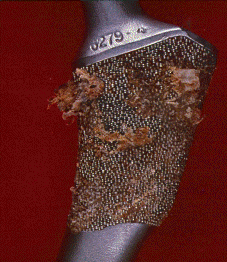
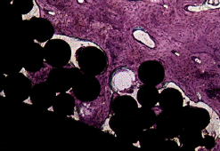
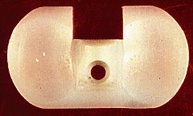
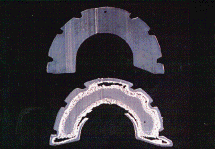

DBEC: The Directions of Wear
By Lauren Sutula
 Implant technology has changed over the years. Early joint replacements were anchored in place using bone cement. In the late 1970s, a beaded, porous coating was developed by John Collier and used by Dr. Mayor as a fixation method for implants, in lieu of bone cement. Shown here is one of the first, non-cemented, porous coated, hip implants. Bone grows into the pores of the beaded surface, resulting in implant fixation.
 Retrieved implants are studied to determine the amount of fixation. This figure shows the technology of a porous-coated implant that was removed from a patient. Bone can be seen growing into the porous coating on the surface of the hip implant. This ingrowth anchors the implant in place, ensuring proper functionality.
Retrieved implants are studied to determine the amount of fixation. This figure shows the technology of a porous-coated implant that was removed from a patient. Bone can be seen growing into the porous coating on the surface of the hip implant. This ingrowth anchors the implant in place, ensuring proper functionality.
 Thin slices of the implant can be cut, polished, and stained to show microscopic bone cells, which indicate bone ingrowth into the coating. The bone cells surrounding the porous coating can be seen in this histology sample.
 Prosthetic devices implanted to restore joint mobility and reduce chronic pain often achieve their desired outcomes and perform well, withstanding the demands and loads imposed by the patient. This retrieved polyethylene knee bearing, which has successfully served the patient, has little damage.
 Unfortunately, man-made implants do not always withstand the demands placed on them. In the recent past, the group's studies of retrieved implants have suggested that the polyethylene bearing surfaces are the weak material link. This retrieved polyethylene bearing has catastrophic damage in the form of cracking and delamination.
Unfortunately, man-made implants do not always withstand the demands placed on them. In the recent past, the group's studies of retrieved implants have suggested that the polyethylene bearing surfaces are the weak material link. This retrieved polyethylene bearing has catastrophic damage in the form of cracking and delamination.
 The Dream Team. Polyethylene used for other purposes does not fail in the same fashion that it does in prosthetic implants. Solving the mystery of unexplainable cracking and delamination in hip and knee implants required the skills of a team. Rear: Brendan Daly, Dan Sperling, Dana Lund, Ian Williams; center: John Collier, John Currier, Barbara Griswold, Barbara Currier; front: Lauren Sutula, Kina Farber, Helene Surprenant, Vic Surprenant.
The Dream Team. Polyethylene used for other purposes does not fail in the same fashion that it does in prosthetic implants. Solving the mystery of unexplainable cracking and delamination in hip and knee implants required the skills of a team. Rear: Brendan Daly, Dan Sperling, Dana Lund, Ian Williams; center: John Collier, John Currier, Barbara Griswold, Barbara Currier; front: Lauren Sutula, Kina Farber, Helene Surprenant, Vic Surprenant.
 Extensive studies of polyethylene were undertaken to understand more thoroughly its behavior. Initial studies on polyethylene included microscopic analysis, and led to the discovery of "spots" - termed fusion defects - in polyethylene, as seen at left. These defects were thought to effect the in vivo wear and life of the polyethylene implants.
Extensive studies of polyethylene were undertaken to understand more thoroughly its behavior. Initial studies on polyethylene included microscopic analysis, and led to the discovery of "spots" - termed fusion defects - in polyethylene, as seen at left. These defects were thought to effect the in vivo wear and life of the polyethylene implants.
 Mechanical testing allows determination of properties of polyethylene. These properties are directly related to the strength, integrity, and performance of the polyethylene and thus the implant. If the implant isn't strong, it will begin to crack or delaminate after cyclic loading which occurs with human activity. Pictured above is the equipment used to test a polyethylene sample.
Mechanical testing allows determination of properties of polyethylene. These properties are directly related to the strength, integrity, and performance of the polyethylene and thus the implant. If the implant isn't strong, it will begin to crack or delaminate after cyclic loading which occurs with human activity. Pictured above is the equipment used to test a polyethylene sample.
 Thorough investigation of thin slices of polyethylene from hip and knee components resulted in the observation of a visible white line that follows the contour of the thin sections from damaged components - the "white band" seen in sections of polyethylene. A one to one correlation was found between the white band and damage in implants. When there is cracking and delamination in retrieved implants, there is a white band in the polyethylene.
Thorough investigation of thin slices of polyethylene from hip and knee components resulted in the observation of a visible white line that follows the contour of the thin sections from damaged components - the "white band" seen in sections of polyethylene. A one to one correlation was found between the white band and damage in implants. When there is cracking and delamination in retrieved implants, there is a white band in the polyethylene.
 The "Rosetta Stone" in the search for the cause of the white band came from two nearly identical implants, with the only difference being sterilization of the material. One cup was non-sterile, while the other was sterilized in air, using gamma radiation. The resulting differences are astounding. The top figure shows polyethylene from the non-sterile cup; below is the cracked polyethylene from the gamma-sterilized cup.
 Radiation sterilization was indicted as the culprit in degrading polyethylene. Chemical and mechanical properties of sterilized material and non-sterile material were measured to quantify differences. Shown here is a qualitative comparison between a degraded, gamma sterilized cup, and a non-sterile cup. The sterilized cup on the right is brittle and has lost much of its strength; the other non-sterile cup has a much greater elongation and retains its strength and ductility. The reduction or retention of strength directly links to the clinical arena and longevity.
Radiation sterilization was indicted as the culprit in degrading polyethylene. Chemical and mechanical properties of sterilized material and non-sterile material were measured to quantify differences. Shown here is a qualitative comparison between a degraded, gamma sterilized cup, and a non-sterile cup. The sterilized cup on the right is brittle and has lost much of its strength; the other non-sterile cup has a much greater elongation and retains its strength and ductility. The reduction or retention of strength directly links to the clinical arena and longevity.
 The sterilization degradation can be seen in the mechanical property measurements of the polyethylene obtained from implants. The degraded white band is the weak link, and may be the site for crack initiation and damage in implants. In this tensile sample of polyethylene, the failure initiates in the "white band" region - confirming that the white line is the weakest region.
The sterilization degradation can be seen in the mechanical property measurements of the polyethylene obtained from implants. The degraded white band is the weak link, and may be the site for crack initiation and damage in implants. In this tensile sample of polyethylene, the failure initiates in the "white band" region - confirming that the white line is the weakest region.
 The research on the polyethylene used in prosthetic implants was of great interest to the orthopedic community, in that enhancement of polyethylene will improve the clinical performance of implants. Research engineer Lauren Sutula was at the 1995 American Academy of Orthopaedic Surgeons meeting in Orlando, Florida, last winter with the team's exhibit - dissemination of information to the industry through an exhibit at a conference with nearly 30,000 people in attendance.
The research on the polyethylene used in prosthetic implants was of great interest to the orthopedic community, in that enhancement of polyethylene will improve the clinical performance of implants. Research engineer Lauren Sutula was at the 1995 American Academy of Orthopaedic Surgeons meeting in Orlando, Florida, last winter with the team's exhibit - dissemination of information to the industry through an exhibit at a conference with nearly 30,000 people in attendance.